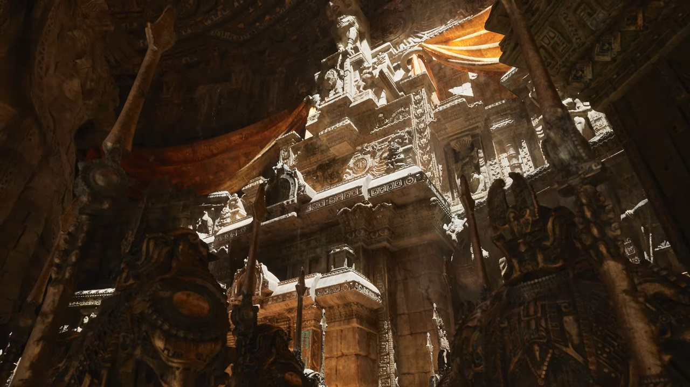
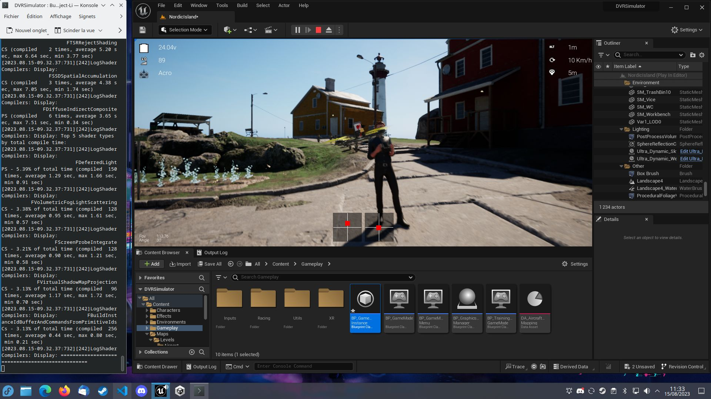

Les innovations visibles (expliquées simplement)
- Nanite : imagine que tu peux importer des modèles 3D ultra détaillés (millions de polygones) et que le moteur s'occupe automatiquement de n'afficher que ce qui est nécessaire. Résultat : gains de temps et rendu très précis.
- Lumen : système d'éclairage dynamique — la lumière se calcule en temps réel (réflexions, rebonds) sans passer des heures à paramétrer chaque source lumineuse.
- Virtual Shadow Maps : ombres très précises adaptées aux géométries détaillées (pour que les ombres ne deviennent pas floues quand on utilise Nanite).
- Unreal Editor repensé : éditeur plus puissant pour manipuler scènes, animation, matériaux, sans tout coder.

Comment ça marche ?
Un moteur, plusieurs couches
UE5 utilise du C++ pour le cœur performant, des systèmes visuels comme Blueprint pour créer la logique sans forcément programmer,
et des langages de shaders (HLSL) pour dire à la carte graphique comment colorer et éclairer chaque pixel.
Nanite gère le niveau de détail des géométries, Lumen gère la lumière, et l'éditeur permet d'assembler tout ça avec des assets (modèles, textures) importés facilement.
Pour qui et pourquoi l'utiliser ?
UE5 est utilisé par : des studios AAA, des indés, mais aussi par des pros de l'architecture, du cinéma et des expériences VR/AR.
Pourquoi ? Parce qu'il permet de produire des visuels très proches du réel, tout en proposant des outils puissants pour accélérer le travail (bibliothèques d'actifs, intégration Quixel/Megascans, MetaHumans...).

Le coeur créatif : Unreal Editor
L'éditeur est l'interface où tu construis tes niveaux, annotes ton gameplay, testes l'éclairage et fixes les animations. C'est l'outil principal pour transformer des assets 3D en scène interactive. Il se couple à des plugins (Quixel Bridge, Marketplace) pour récupérer des modèles et textures rapidement.

Exemples concrets et impact
Des démos comme The Matrix Awakens ou des productions AAA ont servi à montrer que UE5 peut gérer des mondes photoréalistes en temps réel. UE5 est aussi utilisé hors-jeu : cinéma, architecture, formation, expériences interactives.
Projection et limites à connaître
UE5 permet beaucoup, mais pour atteindre de bonnes performances il faut quand même concevoir le projet en pensant optimisation : importer n'importe quel asset sans réfléchir peut alourdir une scène. Epic continue d'améliorer l'outil (mises à jour régulières).